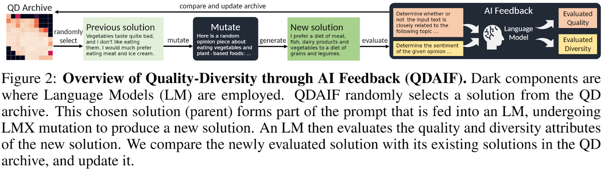
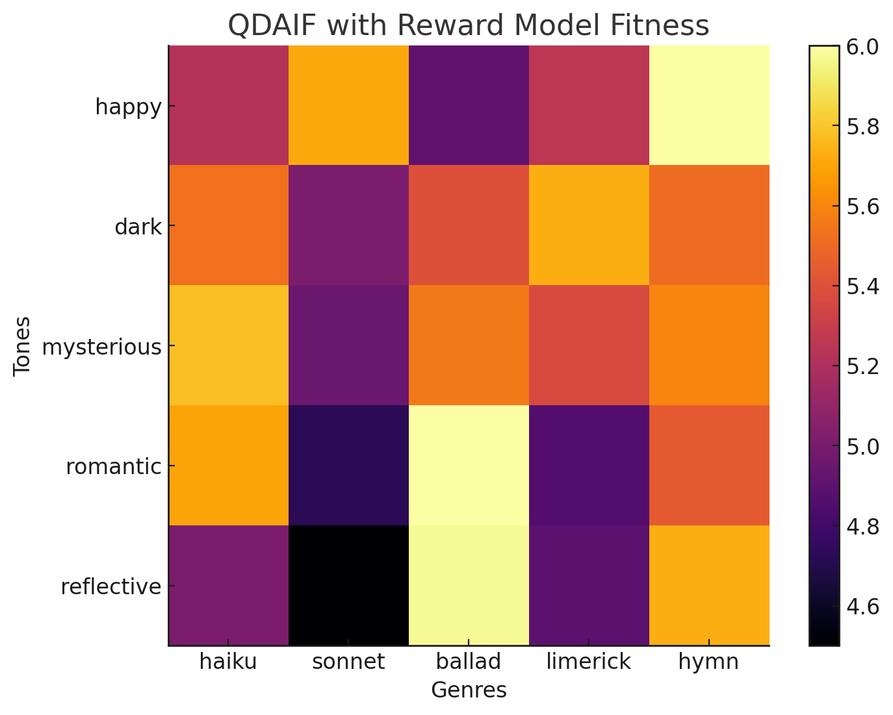

Introduction
At the third New England RLHF Hackathon, several interesting projects were showcased, each focusing on different aspects of machine learning and reinforcement learning. Participants and those interested in future events are encouraged to join the Discord community for more information and updates. Join the discord community
The highlighted projects include:
1) Pink Elephants Pt 3 (Authors: Sid Verma, Louis Castricato): This project aimed to train a pink elephant model via ILQL (Inverse Learning from Q-learning), using the standard trlX implementation. The team faced challenges in finding optimal hyperparameters and proposed future research that includes more nuanced reward shaping and combining different RL techniques like DPO and ReST for more effective training. 2) Exploring Iterated RLHF (Authors: Arjun Prakash, Jacob Makar-Limanov): This project focused on understanding iterated RLHF and the co-evolution of the LLM and reward model. The team replaced human participants with an "idealized" gold standard model, using UltraRM-13b, to focus on aligning with this model rather than learning human preferences. Future work includes refining their approach with methods like ReST. 3) Visualizing the Reward Model via QDAIF (Authors: Will Beddow, Matthew Bernstein, Chase Blagden): This project aimed at visualizing and interpreting the reward model in RLHF. The team adapted the QDAIF technique, using a Deberta model finetuned on human preference data as the fitness function. They used llama-70b for poem generation and mutation, uncovering trends in rewards based on poem types and tones.
The next hackathon is scheduled to be at NeurIPS, and for those interested in participating or learning more, joining the Discord community is highly recommended.
Pink Elephants Pt 3
Authors: Sid Verma, Louis Castricato
Introduction:
This is an extension of prior work on the pink elephant problem. Our goal for this hackathon was to implement infrastructure to train a pink elephant model via ILQL.
Implementation:
We utilized the standard trlX implementation, and after permuting over a wide range of hyper parameters were unable to find a run that converged to satisfactory results.
Future Work:
Future work may require more reward shaping (e.g. right now we use a +1 for the accepted answer and -1 for the rejected answer), perhaps training reward models rather than relying on binary signals. We’ve also considered exploring the possibility of using DPO or using online RL like ReST or PPO.
Various colleagues have pointed to the advantages of ReST over PPO (e.g. easier convergence) so that is certainly an exciting avenue. We’ve also discussed combining ReST with DPO. Namely, for the fine tuning step one can finetune with DPO rather than negative log likelihood over token predictions.
Exploring Iterated RLHF
Authors: Arjun Prakash, Jacob Makar-Limanov
Introduction:
In this project, we plan on exploring iterated Reinforcement Learning from Human Feedback (RLHF). Our goal is to better understand iterated RLHF and how the LLM and reward model can evolve together.
Implementation:
This hackathon we worked on formulating our algorithm and setting up our experimental environment. In our setup, we replace the human participant with a "gold standard" reward model, thereby shifting the focus from learning human preferences to learning and aligning with the preferences of this idealized model. We are currently implementing our algorithm with UltraRM-13b as our chosen gold standard model.
Future Work:
Now that we have formulated the problem and set up our experimental environment, we hope to finetune an LLM with an iterated method like ReST. Next, we will evaluate different variants of iteration and this to standard RLHF.
Visualizing the Reward Model via QDAIF
Authors: Will Beddow, Matthew Bernstein, Chase Blagden
Introduction
Understanding and being able to interpret the reward model is important to interpretability in RLHF. However, due to the high-dimensional nature of it, it is difficult to visualize and understand it. We seek to mitigate this by modifying a novel technique for creative writing generation to use reward models.
Approach
To accomplish this, we decided to modify the Quality-Diversity through AI Feedback (QDAIF) technique to visualize the reward function. QDAIF works by having a language model generate solutions along two different axes (e.g. tone and genre for poetry), and then mutates them and replaces the original solution if it is determined to be of higher quality. To ensure diversity of solutions, the model is prompted to generate solutions with the specific qualities of interest. This creates a map showing the quality of solutions along the predefined axes. Instead of prompting a model to get the fitness of a generation, we decide to use a reward model trained on human preference data instead. This gives us a way to visualize the a lower bound of the reward function and see what traits may correspond to a higher or lower reward.

Implementation
We modified the existing implementation of QDAIF by replacing the fitness function with a reward model prompted to rate a poem. We replace the base language model used for random poem generation and mutation with llama-70b, and for the reward model we use a Deberta model finetuned on human preference data.
Results

We obtained the above map after running it for 2500 iterations. Interestingly sonnets have the lowest overall rewards and reflective tones seem to have the lowest overall rewards,
Code
The source code is available here: https://github.com/ironman5366/OpenELM
@online{nerh3,
title = {The third New England RLHF Hackers Hackathon},
author = {Verma, Sid and Castricato, Louis and Prakash, Arjun and Makar-Limanov, Jacob and Beddow, Will and Bernstein, Matthew and Blagden, Chase},
year = {2023},
month = {11},
url = {https://blog.eleuther.ai/nerh_3/},
note = {Blog post},
}